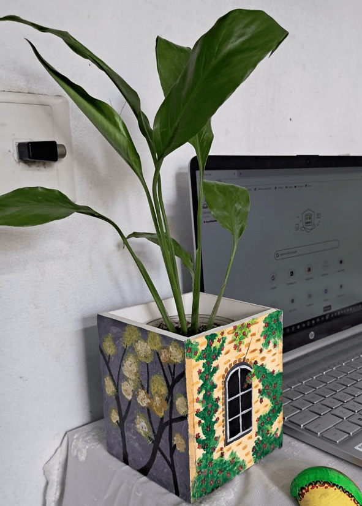

এই ছোট্ট পটে দাঁড়িয়ে থাকা একা গাছটা যেন আমাদের নিজস্ব একাকীত্বের প্রতীক; নীরবে প্রশ্ন তোলে— "পৃথিবীতে কে কাহার?"; পোস্টমাস্টার-এ রবি ঠাকুরের সেই অমোঘ বাণীর প্রতিধ্বনি হয়ে। চারপাশের রঙ বদলায়, সময় বয়ে চলে, মানুষ আসে-যায়; তবু সে দাঁড়িয়ে থাকে, নিজের মতো করে!
আসলে গুরুত্বপূর্ণ একটা প্রশ্ন রয়ে যায়— একাকীত্ব কি তাকে ভাঙে, নাকি গড়ে তোলে? ঝড়, নিঃসঙ্গতা কিংবা অনিশ্চয়তা কি মানুষকে দৃঢ় করে না? সবসময় চোখে পড়ে না, তবু আমাদের মনে হয়— হয়তো সেখানেই তার শক্তি; যেন সে-ই শেষ পর্যন্ত "দ্যা লাষ্ট ম্যান স্ট্যান্ডিং"!
বক্সটা তৈরি করা হয়েছে ৫ মিলিমিটারের পিভিসি শীট ব্যবহার করে; এটা বেশ টেকসই। আঁকা হয়েছে এক্রেলিক ব্যবহার করে; তার উপর সীলার ব্যবহার করে আরেকটু ডিউরেবল করা হয়েছে চিত্রটাকে। পানিতে লম্বা সময় না থাকলে বক্সটার ক্ষতি হবে না।
This solitary plant standing in its little pot feels like a symbol of our own solitude — silently raising the question, "Who belongs to whom in this world?" — echoing Rabindranath Tagore's timeless words from The Postmaster. Colors change around it, time flows on, people come and go; yet it stands, steadfast, in its own quiet way.
And yet an important question lingers — does loneliness break it, or shape it? Does not hardship, solitude, and uncertainty ultimately make us stronger? It may not always catch the eye, but we sense that perhaps therein lies its strength — as if it is, in the end, "The Last Man Standing."
The box is crafted from 5mm PVC sheet, making it quite durable. It is painted with acrylics, and a sealer has been applied over the artwork to make it even more long-lasting. As long as it is not submerged in water for extended periods, the box will remain undamaged.
Philodendron Hederaceum 'Brasil' একটি আকর্ষণীয় ইনডোর প্ল্যান্ট, যার সবুজ-হলুদ ভ্যারিগেটেড পাতা যেকোনো ঘরকে প্রাণবন্ত করে তোলে। এটি তুলনামূলকভাবে সহজে বেঁচে থাকে, তবে ড্রেনেজবিহীন প্ল্যান্টারে সঠিক যত্ন না নিলে দ্রুত সমস্যায় পড়তে পারেন। তাই নিয়ন্ত্রিত পানি ও হালকা, বায়ু চলাচল উপযোগী পরিবেশ অত্যন্ত গুরুত্বপূর্ণ।
পরিচর্যার বিস্তারিত নির্দেশাবলী:
আলো:
উজ্জ্বল পরোক্ষ আলোতে সবচেয়ে ভালো বৃদ্ধি পায়। সরাসরি তীব্র রোদ পাতা পুড়িয়ে দিতে পারে। কম আলোতে বাঁচলেও পাতার রঙ ফিকে হয়ে যায় এবং বৃদ্ধি ধীর হয়।
পানি দেওয়া:
মাটির উপরের ১.৫–২ ইঞ্চি শুকিয়ে গেলে পানি দিন। সাধারণত ৭–১০ দিনে ১বার (পরিবেশ অনুযায়ী পরিবর্তন হতে পারে)। প্রতিবার অল্প পরিমাণ (প্রায় ৪০–৬০ ml) পানি দিন। পাতা হলুদ হয়ে গেলে পানি কমান। এই পটে ড্রেনেজ নেই— তাই অত্যাধিক পানি দেবেন না; কোনোক্রমেই যেন পানি জমে না থাকে, এতে শিকড় পচে যেতে পারে।
আর্দ্রতা:
মাঝারি আর্দ্রতা পছন্দ করে। খুব শুষ্ক পরিবেশে পাতার প্রান্ত শুকিয়ে যেতে পারে। প্রয়োজনে মাঝে মাঝে হালকা মিস্ট করা যেতে পারে।
তাপমাত্রা:
১৮–৩০°সে তাপমাত্রায় ভালো থাকে। ঠান্ডা বাতাস, এসি বা সরাসরি ফ্যানের ঝাপটা এড়িয়ে চলুন।
সার:
প্রয়োজনে ১–২ মাস পর থেকে হালকা (diluted) তরল সার মাসে ১বার দিতে পারেন।
ছাঁটাই:
লম্বা বা অগোছালো ডাল কেটে দিলে গাছ ঝোপালো হয়। হলুদ বা শুকনো পাতা নিয়মিত সরিয়ে ফেলুন।
প্রো টিপ:
পানি দেওয়ার আগে পটের ওজন বা মাটির ভেজাভাব পরীক্ষা করুন। অতিরিক্ত যত্নের চেয়ে নিয়ন্ত্রিত যত্ন এই গাছের জন্য বেশি কার্যকর।
👉 এই গাছের ক্ষেত্রে সবচেয়ে বড় বিষয় হলো— পানি নিয়ন্ত্রণ ও মাটির অবস্থা বোঝা। এটা ঠিকভাবে করতে পারলে, খুব সহজেই গাছ বেঁচে থাকবে।
Philodendron Hederaceum 'Brasil' is a striking indoor plant whose green-and-yellow variegated leaves bring life to any space. It is relatively easy to keep alive, but without proper care in a planter with no drainage, problems can arise quickly. Controlled watering and a well-ventilated environment are therefore essential.
Detailed Care Instructions:
Light:
Grows best in bright indirect light. Intense direct sunlight can scorch the leaves. It can survive in low light, but leaf colour will fade and growth will slow.
Watering:
Water when the top 1.5–2 inches of soil are dry. Generally once every 7–10 days (may vary with conditions). Give a small amount each time — around 40–60 ml. If leaves turn yellow, reduce watering. This pot has no drainage — do not overwater under any circumstances; standing water will cause root rot.
Humidity:
Prefers moderate humidity. In very dry conditions, leaf edges may dry out. A light misting occasionally can help if needed.
Temperature:
Thrives between 18–30°C. Avoid cold drafts, air conditioning, or direct fan airflow.
Fertilizer:
If desired, start applying a diluted liquid fertilizer once a month after the first 1–2 months.
Pruning:
Trimming long or unruly stems encourages a bushier shape. Remove yellow or dried leaves regularly.
Pro Tip:
Before watering, check the weight of the pot or feel the moisture of the soil. Restrained care is more effective than excessive care for this plant.
👉 The most important thing with this plant is understanding water control and reading the soil. Get that right, and it will thrive with very little effort.